Desayunos Tradicionales
Desayuno Sencillo
Huevos al gusto, tajadas de maduro, queso, pan y bebida caliente.
Desayuno Continental
Arroz blanco, huevos al gusto, tajada de maduro, queso, pan y bebida caliente.
Desayuno San Sebastián
Proteína a elección (Res, Cerdo, Pollo o Chicharrón), arroz, huevos, maduro, queso, pan y bebida caliente.
Caldo de Gallina
Presa de gallina criolla, arroz, huevos, arepa, pan y bebida.
Caldo de Costilla
Costilla de res, arroz, huevos, arepa, pan y bebida.
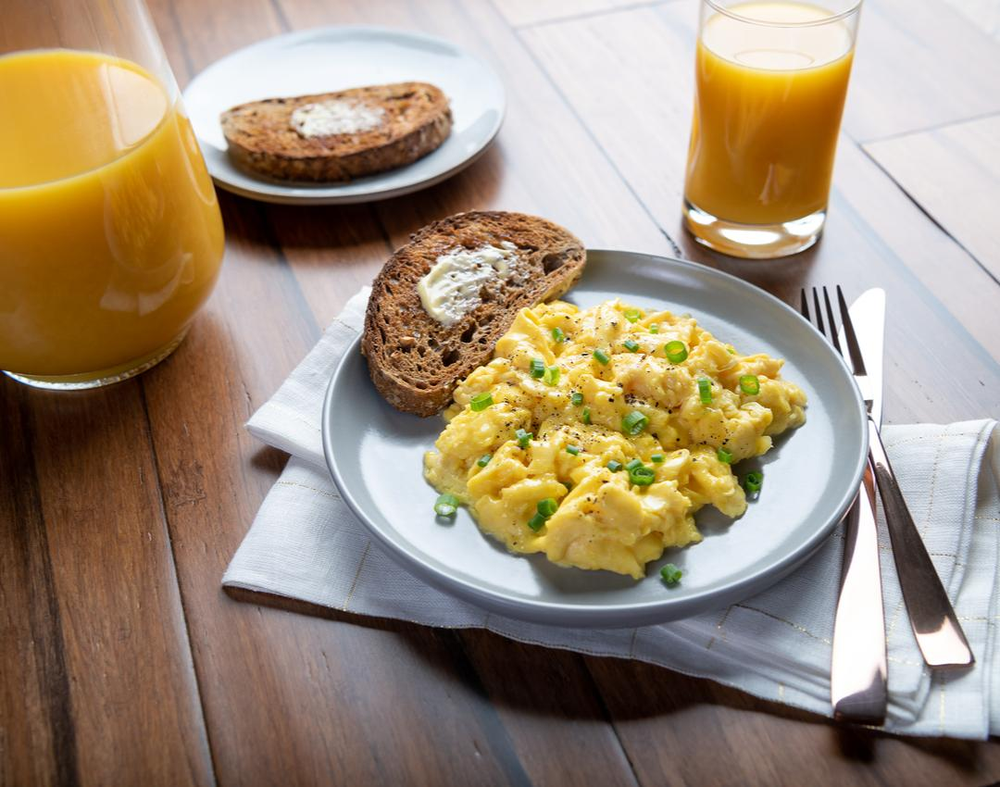
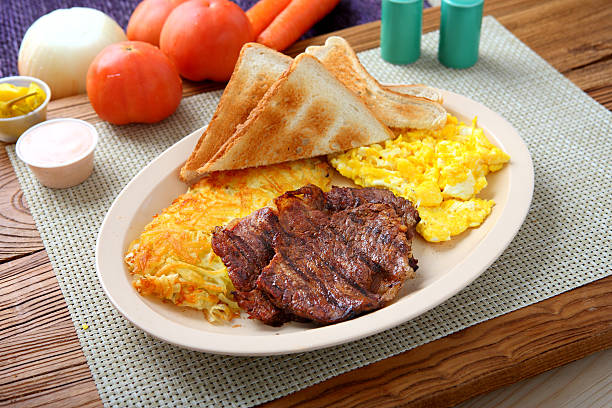
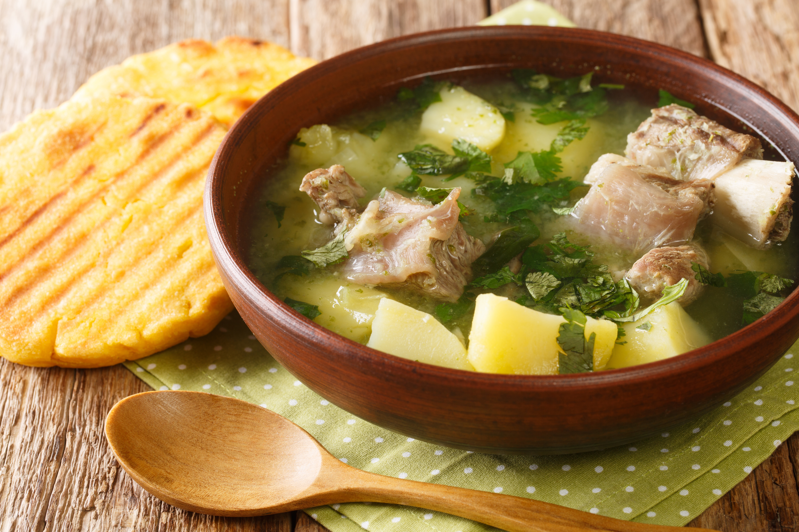
Almuerzos Corrientes
Incluyen: Sopa del día, arroz, grano o papa, ensalada, tajada, arepa y jugo.
Carne de Res / Lomo de Cerdo
Pollo (Sudado, frito o plancha)
Costilla Ahumada / Chuleta
Trucha Arcoíris
Tilapia Frita o Plancha
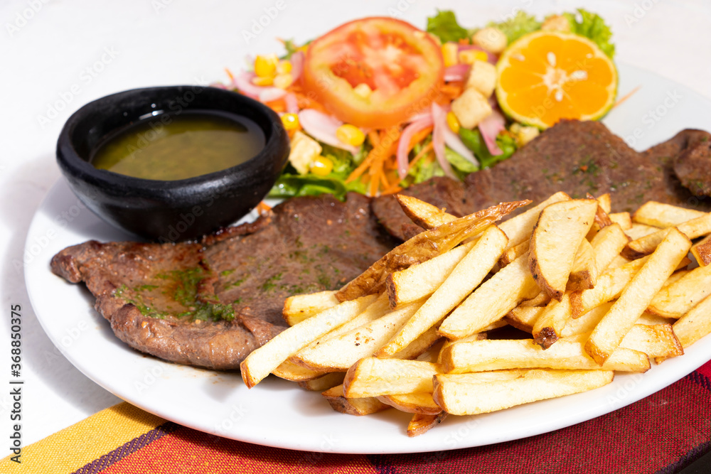
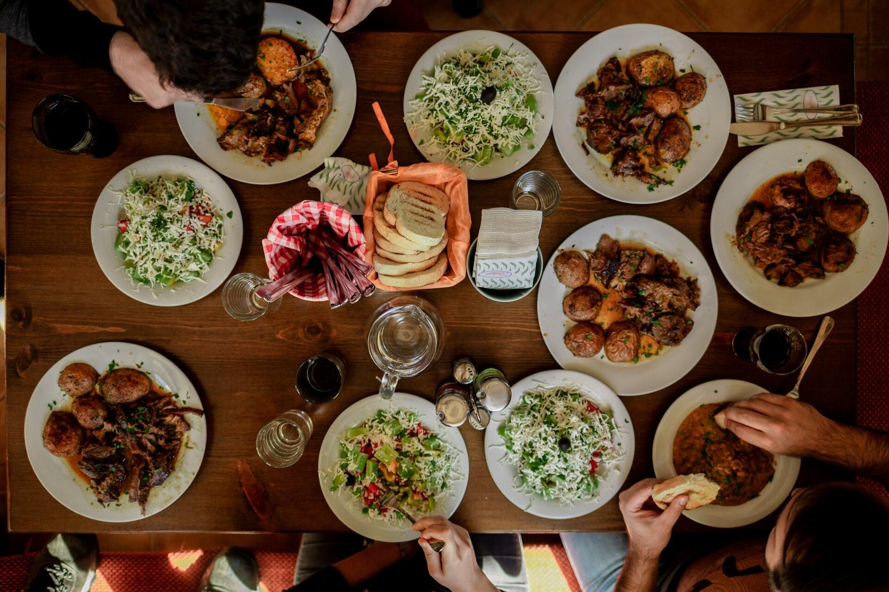
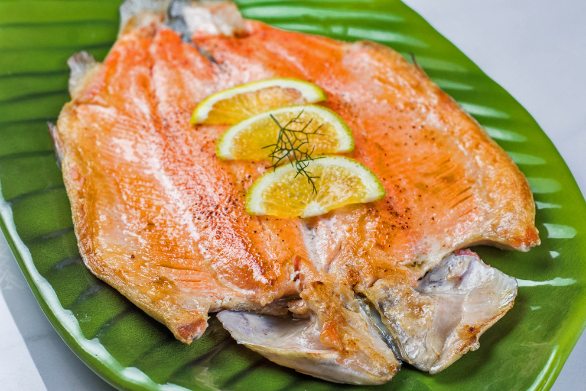
Platos Especiales
Cuy Asado Tradicional
Acompañado de papas cocidas, crispetas y ají de maní.
Frito Pastuso
Trozos de cerdo, mote, papas pastusas, crispetas y ají de maní.
Hornado Nariñense
Cerdo horneado, mote, tortillas de papa y ensalada de cebolla.
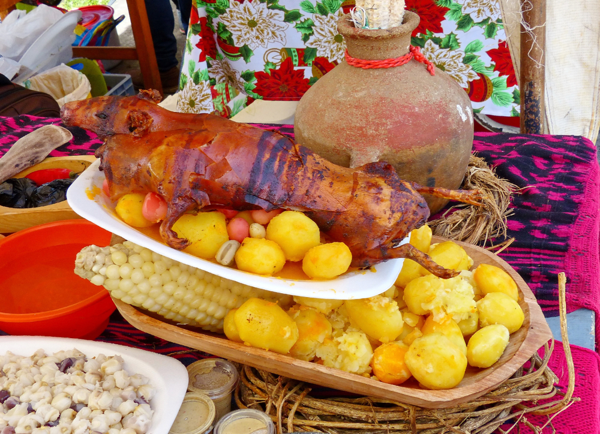
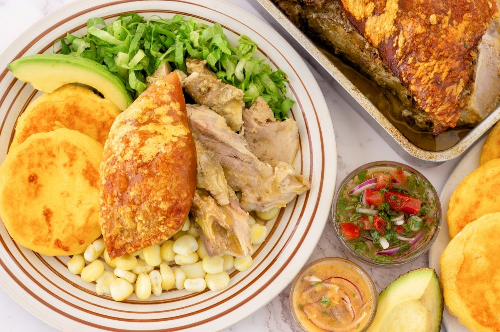
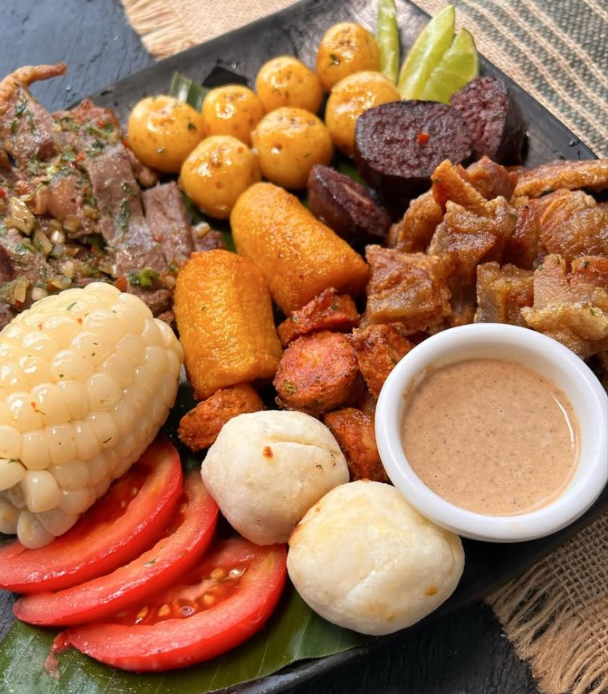
Amasijos y Bebidas
Quimbolitos / Tamales
Choclo con Queso
Envueltos de Choclo
Café de Origen / Chocolate
Aguapanela con Queso
Jugos y Bebidas Frías
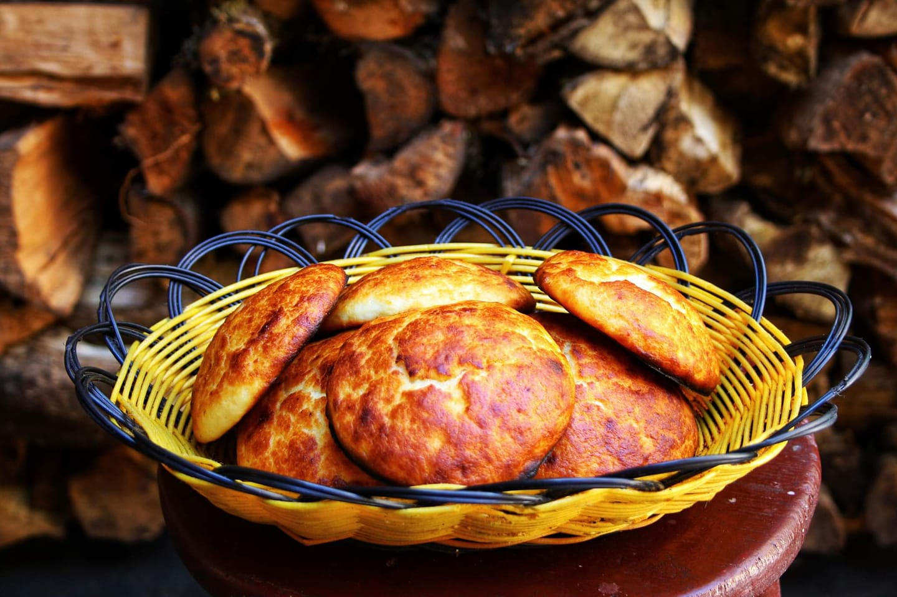
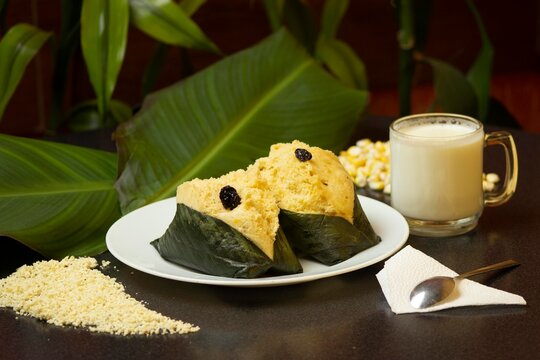
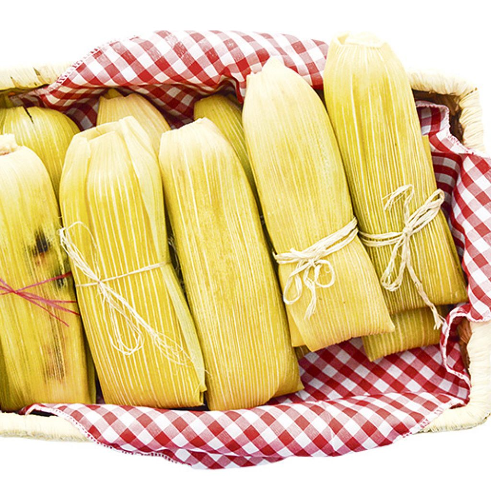